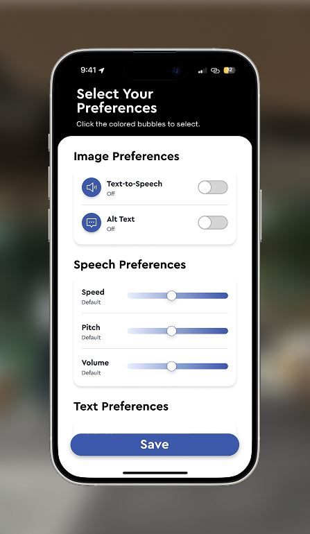
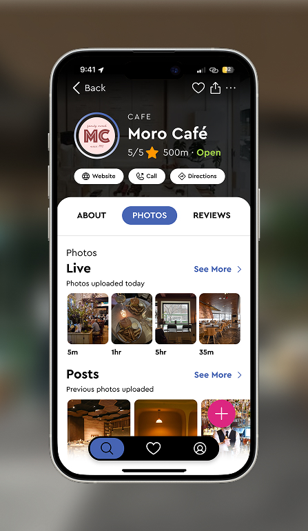
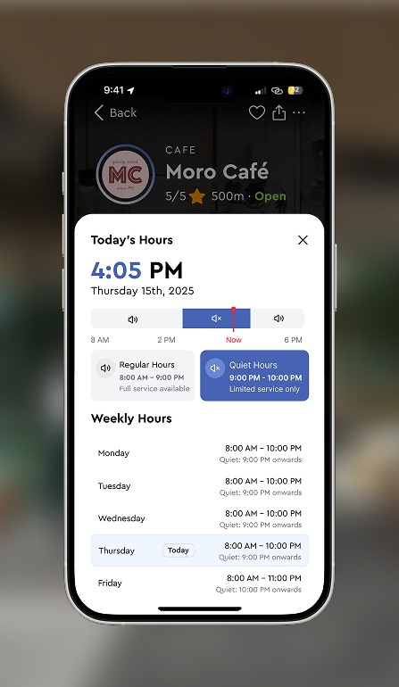
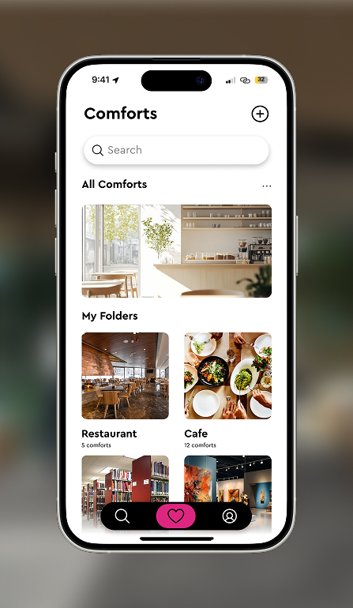
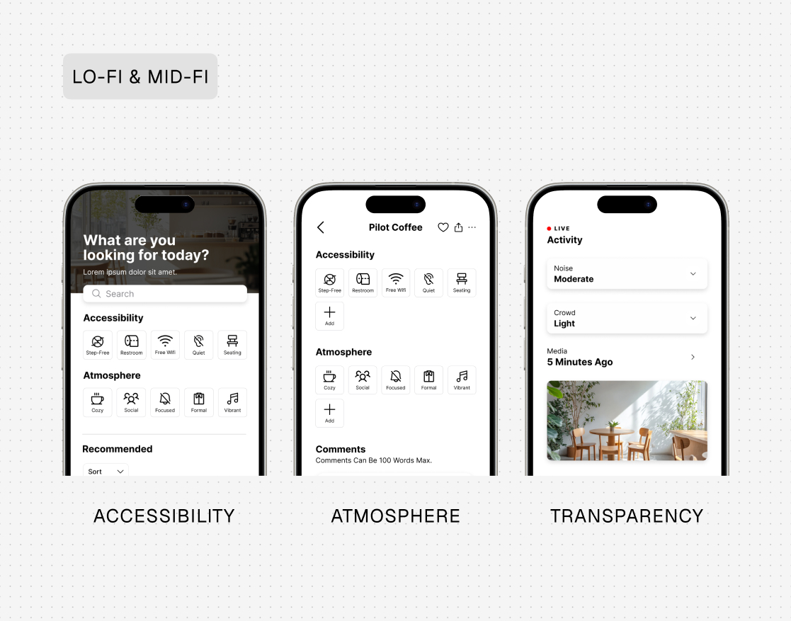
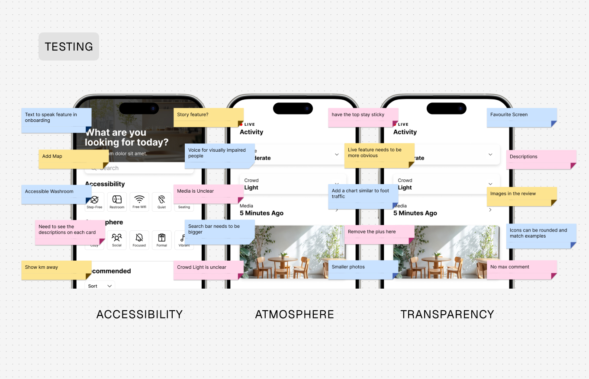

Axsphere • Product Platform • 2025
Designing for confidence before arrival
Overview
Understanding Spaces Before You Visit
Axsphere rethinks how people choose where to go. By filtering spaces based on atmosphere and accessibility, verifying features in real-time, and crowdsourcing current conditions, the experience removes guesswork, builds arrival confidence, and makes every outing more comfortable.
The Problem
Accessibility Information Lacks Real Context
Accessibility details online are often reduced to a single symbol or checklist item, with little context about what a visit is actually like. People can’t reliably assess factors like noise, lighting, crowd density, or spatial layout ahead of time.
This lack of transparency creates uncertainty and can make visiting new places stressful. For people navigating physical, cognitive, or situational accessibility needs, uncertainty can become a barrier to exploring their city.
Research Insights
What People Need to Feel Prepared
I interviewed people with a range of accessibility needs to understand how they evaluate spaces before visiting, what signals they trust, and how uncertainty affects their decision-making.
Defining the Opportunity
Making Real-World Environments Visible Before Arrival
How might we make the real experience of a place visible before arrival? I reframed accessibility as more than infrastructure—it's also atmosphere and predictability—so people can preview conditions and choose spaces with confidence.
Design Exploration
Designing Flows That Reduce Uncertainty
I designed an experience that reduces uncertainty through three core flows.




Test & Iterate
Testing with People Navigating Access Needs
I tested low-fidelity prototypes to validate navigation between discovery, accessibility information, and live updates. Sessions focused on whether users could quickly understand a space, compare options, and feel prepared before visiting.
Feedback helped refine hierarchy, increase visibility of key features, and simplify how accessibility details were presented so critical context was easier to scan.


Final Product
A Product That Builds Confidence Before Arrival
The final product combines discovery, accessibility visibility, and community-driven updates into a single experience that helps people evaluate spaces before visiting.
Key features include atmosphere-based filtering, accessibility profiles, live environmental updates, community contributions, and personal comfort collections for saving and revisiting spaces that work well.
Impact
Helping People Explore with More Confidence
The solution makes accessibility and atmosphere more legible, helping people choose spaces with less uncertainty. By previewing real-world conditions, users can plan ahead and feel more confident exploring new places.
Bringing real-time transparency and community context into one flow reduces the anxiety of “arriving blind” and supports more inclusive experiences for people with varying access needs.


Reflection
Designing for Predictability, Not Just Access
Designing for accessibility really means designing for predictability. I started to realize that feeling comfortable in a space isn’t just about access—it’s about knowing what to expect, understanding the atmosphere, and being able to prepare ahead of time.
Talking to real people shaped this project in a big way and made me feel responsible for creating something that’s genuinely useful, not just something that looks good.
I explored a lot of different directions along the way, which taught me how important it is to narrow in and prioritize what actually matters. Not everything needs to be built, just the parts that create the most value.
This project also pushed me to shift from thinking like a graphic designer to thinking more like a product designer, focusing less on visuals alone and more on usability, systems, and how something would work in the real world. That’s something I’m still actively working on.
Feedback was a huge part of shaping the final outcome and helped me move past my own assumptions to see better ways to approach the experience.
Future Directions


Final Deck